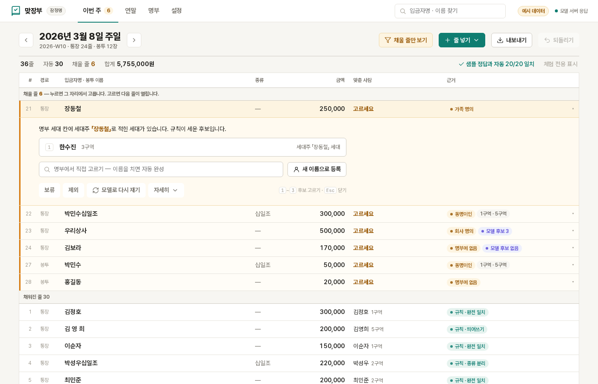

단체 PC 한 대 안에서 끝납니다. 규칙이 대부분을 맞추고, 남은 몇 줄만 사람이 고릅니다. 고른 답은 다음 주부터 자동이 됩니다.

이 사이트의 숫자는 전부 직접 잰 값입니다
헌금은 주일마다 수거하고, 세고, 이름을 맞추고, 적고, 연말에 합산합니다. 다섯 칸 중 둘이 사람 손에 걸립니다.
2026년 9월 16일 재정 담당자 인터뷰(등록 300명, 봉투만 받는 교회) — 봉투를 잘못 꺼내 남의 이름으로 적힌 일이 거의 매주 한 번, 수기 영수증에서 특별헌금이 빠진 일이 서너 번. 인터뷰는 아직 한 건입니다.
화면은 주차마다 한 장입니다. 통장 줄과 봉투 줄이 같은 장부에 들어가고, 못 맞춘 줄만 비어 있습니다.
은행 CSV 를 고르면 줄이 들어옵니다. 봉투는 표 맨 아래에 이름·종류·금액을 치면 됩니다. 이름은 명부에서 자동 완성됩니다.
못 맞춘 줄을 누르면 그 자리에서 후보가 펼쳐집니다. 고르면 다음 빈 줄이 열립니다. 고른 답은 별칭 사전에 쌓입니다.
주간 명단과 개인별 누적이 장부 위에서 그대로 만들어집니다. 되돌리기도 기록으로 남고 지워지지 않습니다.
한 해를 사람별로 합산하고 미확정 줄은 따로 셉니다. 엑셀에서 바로 열리는 CSV 로 내보냅니다.
대부분의 줄은 규칙이 풉니다. 모델은 규칙이 못 푼 줄만 보기 때문에, 느린 기기에서도 한 주 분량이 몇 분입니다.
Qwen2.5-1.5B-Instruct Q4_K_M · 노트북 4스레드(12.7~21.3초) · A31 8스레드(97.3~135.6초) · 2026-09-20 측정 · 규칙이 못 푼 줄 30건을 같은 스크립트로 잰 값입니다. 위 4주 평균처럼 한 주에 모델이 두세 줄을 본다면 노트북은 1분 남짓, 폐폰은 5분 안팎입니다(잰 값에서 곱한 값). 조건은 하나, CPU 가 있을 것.
인터뷰에서 가장 먼저 나온 두 질문입니다. 프로그램을 10년째 못 들인 이유이기도 했습니다.
명부·별칭 사전·대장·기록이 전부 CSV 와 JSON 입니다. 폴더 하나를 복사해 두면 새 PC 에서 그대로 이어갑니다.
USB 나 단체 드라이브로 자동 백업하는 기능은 준비 중입니다. 지금은 폴더를 직접 복사합니다.
별칭 사전이 사람 머릿속이 아니라 파일에 쌓입니다. 화면에서 배울 것은 「이 사람이 맞습니까」 하나입니다.
금액과 이름은 단체 PC 밖으로 나가지 않습니다. 인터넷에 있는 것은 이 사이트의 체험뿐이고 거기엔 가공 자료만 있습니다.
규칙 2단이 못 푼 줄 하나를 보고 후보 순서와 근거를 냅니다. 그것뿐입니다. 확정은 언제나 사람이 합니다.
1.5B 모델이 절반쯤 맞힙니다. 낮은 숫자를 그대로 적는 이유는, 이 숫자가 낮아도 장부가 틀리지 않도록 설계했기 때문입니다 — 모델 결과는 전부 사람에게 오고, 동명이인은 모델을 거치지 않고 곧장 사람에게 갑니다. 지어낸 헌금 종류는 원문에 그 글자가 없으면 버립니다. JSON 스키마 강제 · 온도 0 · 자모 유사도 임계 0.85.
맞추기 코어와 장부는 공개합니다. 돈은 단체가 혼자 하기 번거로운 것에서 받습니다.
가격은 다섯 곳 이상 인터뷰한 뒤에 정하고, 그 전에는 적지 않습니다. 지금은 아무것도 받지 않습니다.
작업공간 폴더 하나에 전부 들어 있고 엑셀로 열립니다. USB 나 단체 드라이브에 복사해 두면 새 PC 에서 그대로 이어갑니다.
아니요. 체험은 가공 샘플만 받습니다. 헌금 내역은 종교 관련 민감정보라 인터넷에 올리지 않는 것이 이 제품의 출발점입니다.
자동으로 채우지 않습니다. 명부에 같은 이름이 둘 이상이면 모델도 거치지 않고 곧장 사람에게 가며, 새 이름 등록 없이 후보 중에서만 고릅니다.
자료를 인터넷에 올리지 않습니다. 그리고 봉투를 치는 손을 줄이는 쪽에 초점이 있습니다. 은행 자동 연동은 약속하지 않고 CSV 내려받기만 전제합니다.